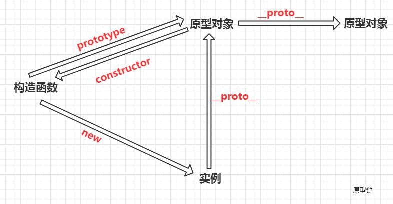

- 函数才有prototype属性，对象没有这个属性，对象对应的是__proto__属性
- 函数广义上来说有__proto__这个属性，因为函数也属于对象，只要是对象就有__proto__属性，只不过函数的__proto__属性是Function.prototype
- 实例是通过new一个构造函数生成
- 原型对象也是对象，也有__proto__,他的__proto__还是原型对象
- 构造函数中定义的方法，实例化后并不一样，而原型对象prototype中定义的方法相等（指向同一地址）
- 添加了原型方法后，实例对象person1和构造函数Person中并没有直观体现，反而在person1.__proto__和Person.prototype中显示了出来
- 由此得出结论：JS中同一构造函数的实例对象要添加共同的属性和方法，需要使用prototype这一属性，也就是原型对象来实现
- 实例对象的__proto__和构造函数的prototype相等（指向同一地址），完全一样
- 构造函数的原型对象的构造器（constructor）指向该构造函数，实例对象的构造器也指向构造函数
- 原型链就是由原型组合成的一个链条，实例对象的__proto__是原型对象，原型对象的本质也是对象，所以原型对象也有__proto__，这样一直往上找__proto__
- 原型对象的作用：用来解决构造函数在创建新实例时，防止重复执行所导致的性能降低；每创建一次实例，构造函数就会执行一次（包括里面的方法），占用内存
- 注意事项：原型属性和方法统一定义时，需要重新定义构造器的constructor的指向